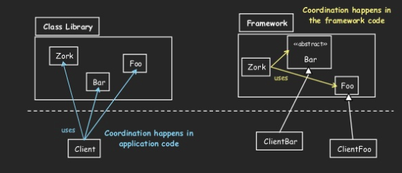

Frameworks
Orientados a Objetos
Un Framework...
Una técnica particular de implementación para construir familias de aplicaciones
Dada una familia de aplicaciones, un Framework...
- Representa un Diseño Común y una Implementación parcial de las aplicaciones dentro de dicha familia.
- Es una solución genérica para un conjunto de problemas similares
Dada una familia de aplicaciones, un Framework...
- Incompleto por naturaleza: funcionalidad específica desarrollada por el usuario del framework
- Las "partes" a completar llevan el nombre de métodos hook (puntos de extensión o hot spots)
Y... ¿Qué es un Framework Orientado a Objetos?
- Una jerarquía de clases (mayormente abstractas).
- Más los hooks o puntos de extensión.
- La interacción definida entre las clases del framework y las especializaciones.
- El framework provee el main / programa principal. Es quien inicia la ejecución.
- Documentación de como uso y extiendo el framework.
Además...
- La funcionalidad core de las aplicaciones es implementada por el framework en ésta jerarquía de clases abstractas.
- La extensión (customización) del framework se realiza implementando los puntos de extensión.
- El framework también puede proveer clases concretas como librerías.
Frameworks OO
"Programando para customizar"
Framworks OO
Si implementamos una aplicación usando un framework tenemos:
- El código del framework, provisto por el desarrollador del framework.
- El código de la customización del framework, provisto por el desarrollador de la aplicación.
- El resto de la aplicación no relacionada con el framework, provista el desarrollador de la aplicación.
Framworks OO
Veamos un ejemplo en Eclipse...
¿Por qué la existencia de Frameworks?
Reuso de Software
El mayor esfuerzo que hacemos los programadores cuando desarrollamos una aplicación es pensar en el diseño de alto nivel que ésta tendra. Los frameworks son una forma de reutilizar ese esfuerzo intelectual.
Los frameworks brindan reuso de diseño e implementación.
¿Qué distingue un Framework de una Librería?
En ambos tengo reuso de código...
Inversión de control
